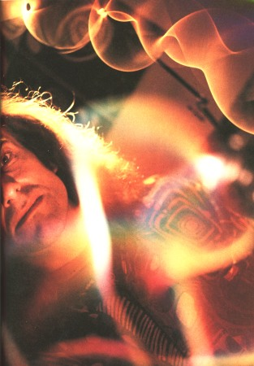
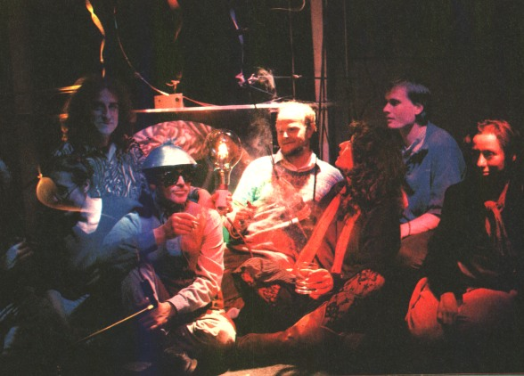

Rise to Prominence
The French style magazine, ACTUEL were the first to run a large piece on my work. Following my appearance on the BBC2 arts program, the Late Show, they published a special issue of the magazine devoted to Chaos, the scientific theory and its influence on contemporary culture. The main article focused on English artists, they showed a full page portrait along with another picture of my group, Earth Signals. Here the article is reproduced in translation.
ACTUEL
July/August 1990, NO.133-134.
DELIRIOUS CHAOS: THE POETIC EXPLOSION By Ariel Kyrou
Wednesday, 23rd May 1990, 11 p.m.: the Late Show begins on BBC 2, before about a million viewers. On the set, a painter, Piers Wardle, is attacking a canvas. He makes rounded forms, draws bizarre shapes, indented, tangled, twisted, frag-mented, sprung from some old surrealist dream. The presenter lets Ian Stewart take the floor. Stewart, a brilliant young mathematician, has just published a book on the theory of Chaos: Does God play dice ? (Penguin). Next, Benoit Mandelbrot is introduced, the father of this gigantic scientific revolution called Chaos. Greying hair, large spectacles, dressed in suit and tie, Mandelbrot does not speak like a scientist, but like a poet; he speaks of ocean waves, of erra-tic puffs of wind, of cloudscapes. but also of Jackson Pollock and the com-poser Gyorgy Ligeti!
I do not understand anymore what is happening: after Mandelbrot, a giant of contemporary science, here is Cohn, the lead singer of the Shamen. a house music group, then Jim McClellan, a journalist from I-D, a magazine better known for its love of fashion than for scientific rigour, and then a certain Paul Friedlander, who presents his "kinetic sculptures" and his "Chaos Happening", or again Alan Moore, a great strip cartoon script-writer.
They are all speaking about science. It is a bit as if the Rita Mitsoukis or Margerin were talking about the Theory of Relativity and Quantum Mechanics on Frederic Mitterand's set.
Let us follow one of the protagonists, Paul Friedlander the sculptor, to his workplace, which is more of a comfortable London house than a studio.
Sitting cross-legged among his "kinetic sculptures", under the red, pink, blue or yellow projectors, there is a curious mixture of a dozen people. They are preparing Earth Signals an exhibition and a performance about Chaos.
Who are they ? Cosmo, a solid bearded sprite in his fifties, video maker, has invented a laser harp which, to his surprise, he found one day in the hands of Jean-Michel Jarre. Dave, the maddest of them all, a young IT expert, is a musician equally enthusiastic about Bach and electronics. Jessica, a little slip of a girl, who blushes at the least question, is a dancer. Paul, still at University will set up, for the exhibition, an installation of six computers, networked with other computers in Europe: for a week they will exchange trans-formed images of "fractals", those magnificent mathematical figures of Chaos. Kobus, a twenty-nine year old physicist, will play with his group, the Fractal Fishes. Maggie, just out of film school, has produced a film on "the unity of nature and science, starting with images of infinity". And the others: Jane, designer; Niranjan, painter; Nick, the ex-music teacher, inventor of wooden instruments with which he plays.
Whether they are uttering a few cryptic phrases, or launching into fiery tirades, all are speaking of the science of Chaos as of something evident, a concept that is still a little vague, but totally incorporated into their art, their inventions, their way of life. Chaos ? Disorder ? But why is it fascinating this group of young creative English minds so much ?
It is Paul Friedlander, the maestro of the "Chaos Happening", who has brought them together here. Ten years ago, Friedlander was an unrecognised artist, a visionary lost in a world of yuppies and art buyers. At the beginning of the seventies, having obtained his degree in Physics, weary of the scientific spi-rit, he had moved into light shows and kinetic art. His psychedelic wheels, his polystyrene fountains and his chaotic strings rarely left his studio. Now, hardly a day passes before a new amateur of Chaos calls him up, wishing to par-ticipate in his Chaos performance.
Chaos is fashionable. But what is Chaos ?
Take one of Friedlander's "kinetic sculptures". It operates very simply: A string, suspended between two stalks, which can be displaced in any direction. At the end of this curious skipping rope, on the stalks two motors of different power, and to supply the art, colour filters. You start the system up and the string races away, dividing itself into two, three, four five madly unstable rounds, separated by Islands of stillness: the bifurcation points. Don't touch anything now: the chaotic system seems to converge to a curve, unpre-dictable and irregular, which rules the disorder. This fragile curve is the strange attractor of the system. One of the greatest inventions of the science of Chaos, the strange attractor.
Chaos: that's not a mess, or total confusion. To begin with, it can arise in a device as simple as Friedlander's sculpture: a string and two forces. Or in an oscillating pendulum. Put a magnet near this; you introduce just one new force, and Chaos is born; like the string of the sculpture, the pendulum moves in all directions. Do you understand ? It is enough to have three different forces, and Chaos arises in Nature. Only three! Imagine what can happen up above, in the eddies of the clouds, or in a Parisian traffic jam. But wait: the science of Chaos does not only tell us this; it also shows that unforeseen order can emerge in the heat of disorder.
That is the reason why one can spend hours, fascinated, in front of this coloured, changing string, why one can stay for hours watching the sea gnawed by the waves, or the desert swept by the wind. Nature offers us countless strange attractors which control disorder. Take the climate of our temperate zone: what restlessness. It can hail in May, and the sun can shine brightly in February. And yet it will never be Siberian or tropical, it keeps within the limits of an attractor.
Now touch one of the stalks of Friedlander's sculpture lightly: the string will lose its shape, coil up and uncoil, into a different chaotic dance, with a changed strange attractor. A touch has been sufficient to make the string impose a different harmony on its disorder. The scientists say that the system is "sensitive to initial conditions". Your finger has been the grain of sand that derails the enfine, the orange zest that transforms an ordinary mousse au cho-colat into a marvel for the palate.
A minute cause, a grain of dust, has caused an enormous upset. The meteorolo-gists have a pretty image for this: the butterfly effect. A slight air displace-ment, a butterfly fluttering above the great wall of China can cause a terrible hurricane over Paris many months later. There have been chain reactions, con-nections, chaotic bifurcations. Indeed, it was a meteorologist, Lorenz, who, analysing climatic data on his old computer in 1964, discovered the butterfly effect, and the first strange attractor in the history of science.